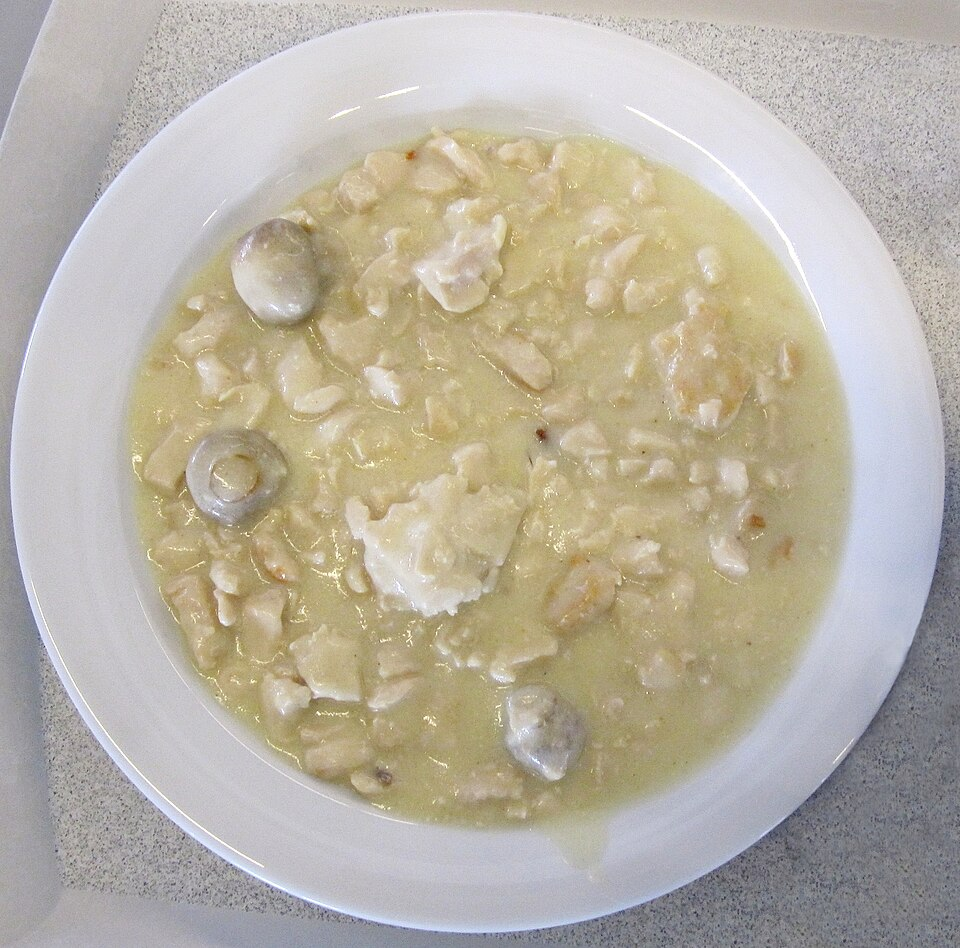

Aves · Frango
Fricassé de frango

Ingredientes
- 2 colheres (sopa) de manteiga
- 2 peitos de frango em pedaços pequenos
- Sal e pimenta a gosto
- 3 colheres (sopa) de conhaque
- 100 g de cogumelos frescos fatiados
- ½ xícara (chá) de água quente (se necessário)
- 1 lata de creme de leite
- 1 colher (sopa) de suco de limão
Modo de preparo
- Refogue o frango na manteiga; tempere com sal e pimenta e doure bem. Em fogo bem baixo, deixe secar quase todo o caldo.
- Junte o conhaque e flambe. Acrescente os cogumelos; tampe e termine o cozimento, com água quente se precisar.
- Com o frango macio, junte creme de leite e limão, mexendo. Não deixe ferver. Sirva na hora com arroz branco e batata-palha.